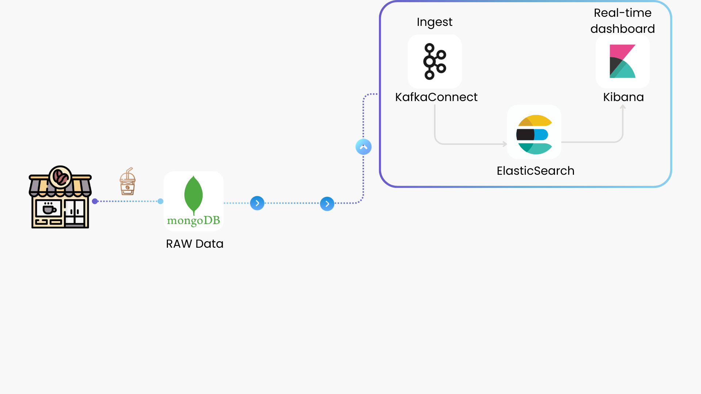
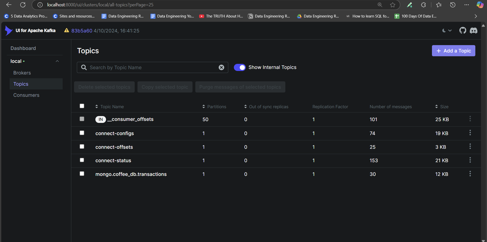
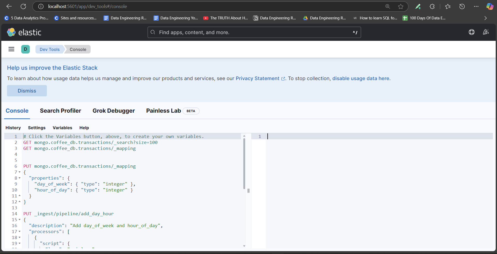
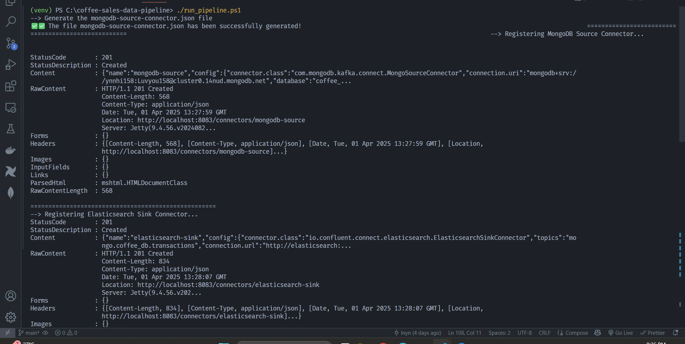
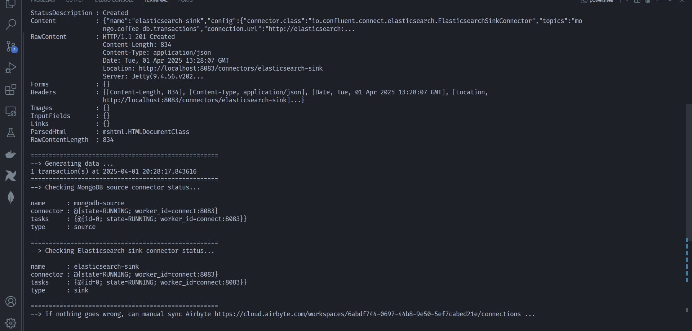
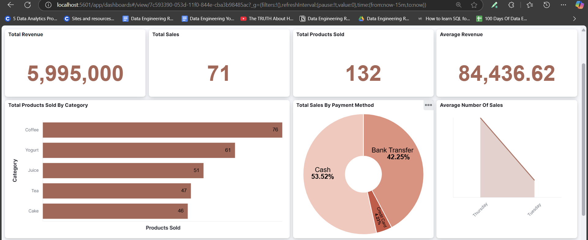
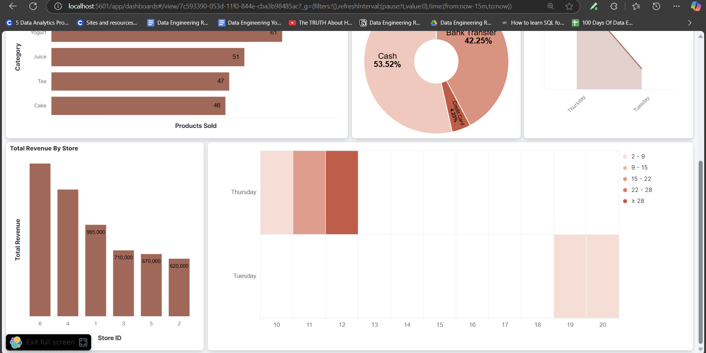

⚡ Streaming Pipeline

1. Configure MongoDB connection
You need to complete the setup in the Prerequisites section before proceeding.
Set up your config.ini file with the necessary credentials to connect to your MongoDB database:
config = configparser.ConfigParser()
config.read("config.ini")
# Connect to MongoDB
username = config["mongo"]["username"]
password = config["mongo"]["password"]
cluster = config["mongo"]["cluster"]
database = config["mongo"]["database"]
uri = f"mongodb+srv://{username}:{password}@{cluster}"
client = MongoClient(uri)
db = client[database]
2. Setup Kafka Connect
To set up Kafka Connect, we first need to configure the Kafka Broker and Kafka UI as follows:
Kafka Broker
All Kafka container-related data will be stored in docker_volumes/kafka
kafka:
container_name: kafka
image: 'bitnami/kafka:latest'
user: root
ports:
- '9094:9094'
networks:
- myNetwork
environment:
- KAFKA_CFG_NODE_ID=0
- KAFKA_CFG_PROCESS_ROLES=controller,broker
- KAFKA_CFG_LISTENERS=PLAINTEXT://:9092,CONTROLLER://:9093,EXTERNAL://:9094
- KAFKA_CFG_ADVERTISED_LISTENERS=PLAINTEXT://kafka:9092,EXTERNAL://localhost:9094
- KAFKA_CFG_LISTENER_SECURITY_PROTOCOL_MAP=CONTROLLER:PLAINTEXT,EXTERNAL:PLAINTEXT,PLAINTEXT:PLAINTEXT
- KAFKA_CFG_CONTROLLER_QUORUM_VOTERS=0@kafka:9093
- KAFKA_CFG_CONTROLLER_LISTENER_NAMES=CONTROLLER
- KAFKA_AUTO_CREATE_TOPICS_ENABLE=true
volumes:
- ./docker_volumes/kafka:/bitnami/kafka:rw
Create Required Topics for Kafka Connect
Kafka Connect requires three topics: connect-configs, connect-offsets, and connect-status.
These topics must be created before starting Kafka Connect, otherwise, the connector will fail to start.
To ensure that the topics are created properly, we set up an init-kafka container. This container will wait until Kafka is fully ready before creating the required topics.
init-kafka:
image: 'bitnami/kafka:latest'
depends_on:
- kafka
networks:
- myNetwork
entrypoint: ["/bin/bash", "-c"]
command:
- |
echo "Waiting for Kafka to be ready..."
while ! kafka-topics.sh --bootstrap-server kafka:9092 --list; do
sleep 5
done
echo "üöÄ Kafka is ready. Creating topics ...... üöÄ"
kafka-topics.sh --create --if-not-exists --bootstrap-server kafka:9092 --partitions 1 --replication-factor 1 --config cleanup.policy=compact --topic connect-configs
kafka-topics.sh --create --if-not-exists --bootstrap-server kafka:9092 --partitions 1 --replication-factor 1 --config cleanup.policy=compact --topic connect-offsets
kafka-topics.sh --create --if-not-exists --bootstrap-server kafka:9092 --partitions 1 --replication-factor 1 --config cleanup.policy=compact --topic connect-status
echo 'üöÄ Topic created successfully! üöÄ'
kafka-topics.sh --bootstrap-server kafka:9092 --list
Kafka UI for Monitoring
To easily monitor Kafka topics and messages, we set up Kafka UI.
kafka-ui:
container_name: kafka-ui-1
image: provectuslabs/kafka-ui:latest
ports:
- 8000:8080
depends_on:
- kafka
networks:
- myNetwork
environment:
KAFKA_CLUSTERS_0_NAME: local
KAFKA_CLUSTERS_0_BOOTSTRAP_SERVERS: PLAINTEXT://kafka:9092
DYNAMIC_CONFIG_ENABLED: 'true'
Kafka Connect Configuration
Finally, we configure Kafka Connect. The commands section downloads the required MongoDB and Elasticsearch connector plugins.
connect:
image: confluentinc/cp-kafka-connect:latest
hostname: connect
container_name: connect
depends_on:
- kafka
ports:
- "8083:8083"
environment:
CONNECT_BOOTSTRAP_SERVERS: "kafka:9092"
CONNECT_REST_ADVERTISED_HOST_NAME: "connect"
CONNECT_GROUP_ID: "connect-cluster"
CONNECT_CONFIG_STORAGE_TOPIC: "connect-configs"
CONNECT_OFFSET_STORAGE_TOPIC: "connect-offsets"
CONNECT_STATUS_STORAGE_TOPIC: "connect-status"
CONNECT_KEY_CONVERTER: "org.apache.kafka.connect.json.JsonConverter"
CONNECT_VALUE_CONVERTER: "org.apache.kafka.connect.json.JsonConverter"
CONNECT_PLUGIN_PATH: "/usr/share/confluent-hub-components"
volumes:
- ./docker_volumes/kafka_connect:/data
networks:
- myNetwork
command:
- bash
- -c
- |
confluent-hub install --no-prompt mongodb/kafka-connect-mongodb:latest
confluent-hub install --no-prompt confluentinc/kafka-connect-elasticsearch:latest
/etc/confluent/docker/run
3. ElasticSearch and Kibana
To ensure that data persists even after restarting the container, we mount the docker-volumes/elasticsearch_data folder as a volume for Elasticsearch.
elasticsearch:
image: docker.elastic.co/elasticsearch/elasticsearch:8.5.0
container_name: elasticsearch
ports:
- "9200:9200"
environment:
- discovery.type=single-node
- xpack.security.enabled=false
volumes:
- ./docker_volumes/elasticsearch_data:/usr/share/elasticsearch/data
networks:
- myNetwork
Kibana is configured to connect to Elasticsearch via the ELASTICSEARCH_HOSTS environment variable:
kibana:
image: docker.elastic.co/kibana/kibana:8.5.0
container_name: kibana
environment:
- ELASTICSEARCH_HOSTS=http://elasticsearch:9200
ports:
- "5601:5601"
depends_on:
- elasticsearch
networks:
- myNetwork
Note
The value of ELASTICSEARCH_HOSTS must match the container name of the Elasticsearch service.
In this setup, our Elasticsearch container is named elasticsearch, so Kibana should use http://elasticsearch:9200.
If the container name is changed, ELASTICSEARCH_HOSTS must be updated accordingly.
4. Run the Streaming script
Now we can start the necessary containers and begin streaming data to MongoDB and Elasticsearch using the following command:
docker-compose up -d
Execution Overview üé¨
Before setting up the environment, here’s a quick demo of the streaming pipeline in action:
üìΩÔ∏è
Run the Pipeline Script
Instead of running multiple commands manually, we have a PowerShell script run_pipeline.ps1 that automates the entire process, including:
✔️ Generating connector configuration
✔️ Registering Kafka Connectors
✔️ Checking connector status
The script performs the following tasks:
-
Generate MongoDB Source Connector Configuration
The first step is to generate theWrite-Host "--> Generate the mongodb-source-connector.json file" python connectors/generate-mongo-connector.py Write-Host "===================================================="mongodb-source-connector.jsonfile. This file contains the Kafka Source Connector configuration, which is created by the scriptgenerate-mongo-connector.pylocated in theconnectors/folder. The configuration file will be generated using connection details stored inconfig.ini (such as MongoDB credentials, cluster, database, and collection).Note: The scriptuser = config["mongo"]["username"] password = config["mongo"]["password"] cluster = config["mongo"]["cluster"] database = config["mongo"]["database"] collection = config["mongo"]["collection"]generate-mongo-connector.pyreads fromconfig.ini and creates themongodb-source-connector.json` file.
Visit the MongoDB Kafka Connector Configuration Properties to learn more about the attributes or configuration of the MongoDB source connector. -
Register MongoDB Source Connector to Kafka Connect
After generating the configuration, the script registers the MongoDB Source Connector to Kafka Connect.Start-Sleep -Seconds 5 Write-Host "--> Registering MongoDB Source Connector..." Invoke-WebRequest -Uri "http://localhost:8083/connectors" -Method Post -ContentType "application/json" -InFile ".\connectors\mongodb-source-connector.json" Write-Host "====================================================" -
Register Elasticsearch Sink Connector to Kafka
Similarly, the script registers the Elasticsearch Sink Connector to Kafka. This connector’s configuration file is also located in the connector folder.Start-Sleep -Seconds 5 Write-Host "--> Registering Elasticsearch Sink Connector..." Invoke-WebRequest -Uri "http://localhost:8083/connectors" -Method Post -ContentType "application/json" -InFile ".\connectors\elasticsearch-sink-connector.json" Write-Host "===================================================="
Visit the Elasticsearch Sink Connector Documentation to learn more about the attributes or configuration of the Elasticsearch sink connector. -
Generate Data for Testing
The script then runs a small data generation process to simulate real-time data streaming, which helps check if the connectors are working properly.Start-Sleep -Seconds 5 Write-Host "--> Generating data ..." python scripts/mongodb_data.py Write-Host "====================================================" -
Check the Status of the Connectors
Finally, the script checks the status of both the MongoDB Source Connector and the Elasticsearch Sink Connector to ensure they are running successfully.Start-Sleep -Seconds 5 Write-Host "--> Checking MongoDB source connector status..." Invoke-RestMethod -Uri "http://localhost:8083/connectors/mongodb-source/status" Write-Host "====================================================" Start-Sleep -Seconds 5 Write-Host "--> Checking Elasticsearch sink connector status..." Invoke-RestMethod -Uri "http://localhost:8083/connectors/elasticsearch-sink/status" Write-Host "====================================================" Write-Host "--> If nothing goes wrong, can manual sync Airbyte https://cloud.airbyte.com/workspaces/6abdf744-0697-44b8-9e50-5ef7cabed21e/connections ..."
Full script in the run_pipeline.ps1 file.
Once all containers are ready and healthy, you can access the following services:
-
Kafka UI:
localhost:8000 -
Kafka Connect UI:
localhost:8083
-
Kibana (ElasticSearch UI):
localhost:5601
Execute the following command to run the entire pipeline setup:
.\run_pipeline.ps1
 
And now you can create a dashboard in Kibana to monitor trends in real-time.
 